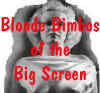

|
LASER |
|
Klute/A-B |
|
Warner/1972/114m/WS
2.20 |
A tightly woven thriller from director Alan J. Pakula, Klute reaches to a
higher standard by virtue of excellent character development. Klute is
more chess game than mystery, as each minor piece must topple to clear
the playing board before reaching a resolution of checkmate. All of
Pakula's pieces sacrifice themselves to the making of the best movie
possible.
Klute features two very fine lead performances. Jane Fonda does a
brilliant job as call girl Bree Daniels. Fonda arms Bree with exterior armor
to protect a confused and fragile character. Her wonderful voice adds a
layer of sophistication to her characterization. Fonda received the Best
Actress honor for the 1971 Klute. Donald Sutherland's cold style mirrors
the methodical thoroughness and bulldog perseverance of detective Klute.
Director of photography has created a lighting scheme with heavy
emphasis on shadows. The lighting is natural throughout the film. The
kinkiness that pervades the film like a perfume generously applied to
mask an unpleasant odor is underscored by Michael Small's restrained
score.
.While the overall luminance level might have been higher, details in the
many shadowy scenes are always clear enough. The colors are accurate.
The mono soundtrack is very effective and has been recorded with
excellent detail. Klute, from Warner Home Video runs 114 minutes and is
presented widescreen 2.20:1.
|
|
The
Feature
Archive
has articles ranging from John
Ford to Screen
Voices, The
Heistmasters, Akira
Kurosawa and Frank
Darabont.

Catch the Hollywood take on Blonde Bimbos by
clicking on the image above.
Check out the Movie
Poster Archive
for short bios and images of Susan Hayward, Kirk
Douglas, Katharine Hepburn and many more. This
month's featured star is Clark
Gable.
|
|
Imaging
Science Foundation
The
Imaging Science Foundation promotes proper
standards in home theater viewing. ISF trained
technicians offer monitor calibration services
to consumers. The difference in a properly
calibrated monitor can be astounding. Click on
the image to find an ISF member near you. |
|
HOT
LINKS
DVD
Verdict
They
may be judgmental, but that's the point, isn't
it. Lots of DVD reviews plus news and more
The
Home Theater Forum
Looking
for lively and helpful exchanges on home
theater, DVD, movies. Visit this friendly site
and get a hardy welcome. |
|
Home
Theater Reference Reviewing System
When you read a DVD review it's of utmost importance
to know what equipment is being used to evaluate
quality. Click on the projectors to find out more. |
|